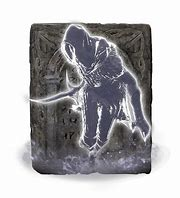
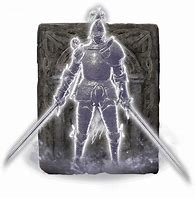
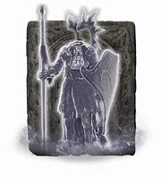

Mimic Tear is objectively the best Spirit Ash in Elden Ring, anyone beleiving otherwise simply being wrong or bad at the game. The Mimic Tear Spirit Ash creates a copy of your character to fight alongside you, meaning the Spirit Ash will only be as good or as bad as you are. Nothing is more satisfying than doing less than 75% of the work against a boss as you watch your Mimic Tear do the rest for you. Other Spirit Ashes simply cannot compare to a being as magnificent and powerful as well... yourself.
Here are a few completely factual reasons why the Mimic Tear is the best Spirit Ash:
Here are a few of the Mimic Tears closest competitors and why they are inferior to it:
| Spirit Ash | Vs Mimic Tear | Link |
|---|---|---|
|  Black Knife Tiche |
Destined Death is too weak to affect the Mimic Tear | Black Knife Tiche |
|  Banished Knight Oleg |
Loses to a 1hp Mimic Tear | Banished Knight Oleg |
|  Lhutel the Headless |
Mimic Tear wins. Trust | Lhutel the Headless |
Looking at the table, the truth speaks for itself. It's clear that even though these are the Mimic Tears closest competitors, the Mimic Tear is in a tier of its own. Even after multiple balance patches the Mimic tear continues to stand strong against strong enemies and even more powerful bosses introduced in the DLC. I hope this was able to clear up some confusion when it comes to what Spirit Ash you should be using.